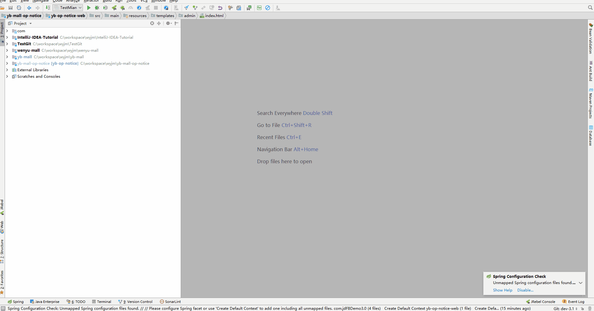
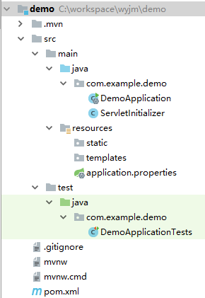
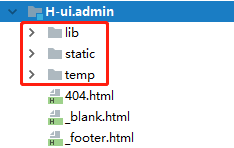
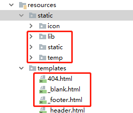

最近让编写一个后台管理系统，想着自己搭建比较费劲，就在网上找了一个比较好用简单的后台管理系统框架，引入后，咱们就只需要编写具体模块页面就行了，节省开发量，页面也比较漂亮。
创建spring-boot工程
此处我们使用IEDA来进行spring-boot的快速创建：

创建完成后的工程结构：

pom.xml：Maven构建说明文件
DemoApplication.java：一个带有main()方法的类，用于启动应用程序（关键）
ServletInitializer.java作用是spring-boot项目直接打war，放在tomcat下启动会报错，因为缺少web.xml，添加此类后就ok了
DemoApplicationTests.java：一个空的Junit测试类，它加载了一个使用Spring Boot字典配置功能的Spring应用程序上下文
application.properties：一个空的properties文件，你可以根据需要添加配置属性
static：是放静态资源的默认路径，支持修改
templates：是放置页面的默认路径，默认后缀为html，也支持修改
移入h-ui-admin的静态资源和页面
h-ui-admin主要包含2部分：静态css+js，html，将这2部分分别复制到static和templates里面即可，对应如下：


添加controller及配置文件
public class BaseController {
("/")
public String index(){
return "index";
}
("/welcome")
public String welcome(){
return "welcome";
}
("/article-list")
public String articleList(){
return "article-list";
}
}
application.properties添加配置文件：
server.port=9999
server.context-path=/
启动工程
通过DemoApplication-main()启动工程，访问路径http://localhost:9999/即可打开页面。
相关问题
icon显示问题
在替换h-ui默认的icon时，发现如果将icon放在static目录下，不会生效，后来尝试放在static/icon文件夹下面才能生效。
静态资源加载配置
把静态资源放在默认的static下面，就相当于设置了如下静态资源的访问路径，所以如果你不使用static路径时，就需要手动添加以下设置来指定静态资源的路径:
public class WebConfig extends WebMvcConfigurerAdapter {
/**
* 静态访问路径
*
* @param registry
*/
public void addResourceHandlers(ResourceHandlerRegistry registry) {
registry.addResourceHandler("/**").addResourceLocations("classpath:/static/");
super.addResourceHandlers(registry);
}
}
html校验
首次启动访问页面时，报错：
org.xml.sax.SAXParseException: 元素类型 "link" 必须由匹配的结束标记 "</link>" 终止。
org.xml.sax.SAXParseException: 元素类型 "meta" 必须由匹配的结束标记 "</meta>" 终止。
说明html有些结束标记不完整，此时我选择的方法是：去掉严格的html格式校验:
1.pom引入jar：
<!-- 防止thymeleaf对html严格校验 -->
<dependency>
<groupId>net.sourceforge.nekohtml</groupId>
<artifactId>nekohtml</artifactId>
<version>1.9.22</version>
</dependency>
2.application.properties添加配置文件：
spring.thymeleaf.mode=LEGACYHTML5
iframe嵌套页面设置
h-ui-admin子页面的嵌套使用的是iframe：
<iframe scrolling="yes" frameborder="0" src="welcome"></iframe>
Src会请求后台，不能直接引入静态页，如果src=”welcome.html”是会报404的，所以得添加对应controller